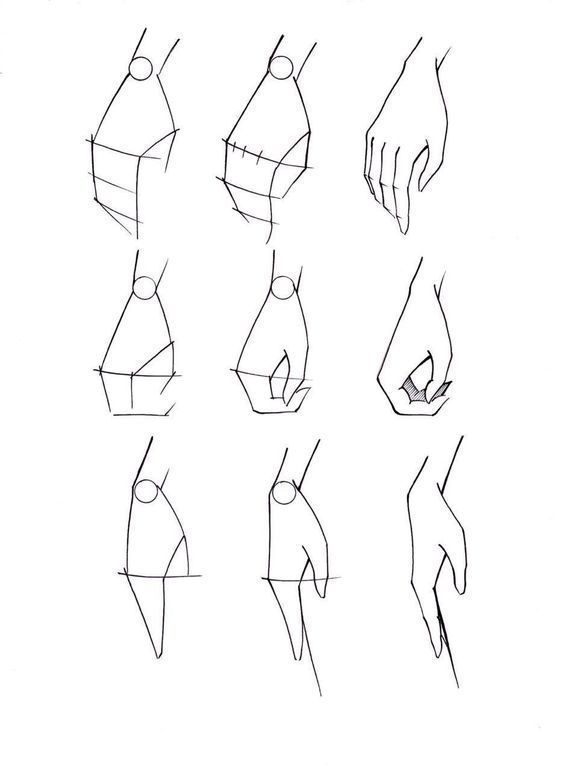
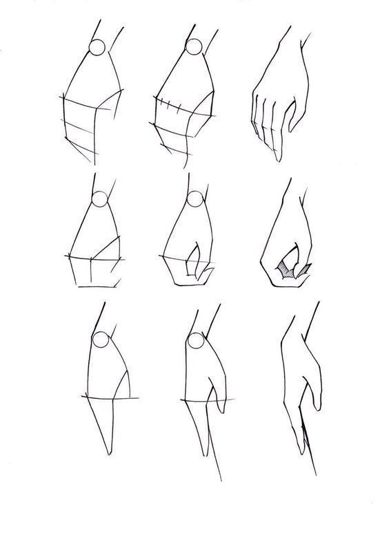

Cara menggambar mudah untuk kamu yang masih pemula
- langkah pertama yang harus kamu lakukan ialah buatlah lingkaran sempuna, lalu tarik garis lurus ke bawah,garis lurus ke samping, lalu buat garis untuk membuat dagunya,selanjutnya buatlah satu atau dua garis mata yang ada di tengah lingkaran.
- lalu langkah selanjutnya yaitu membuat mata dan telinganya.pertama mari kita buat matanya dulu. mari kita buat bentuk daun biasa lalu buat garis atas dan bawah mata nya,kemudian buat kelopak mata dan seterusnya.............
- langkah yang ke tiga yaitu menbuat telinganya.pertama buat bentuk telinga dan selanjutnya...............
- langka selanjutnya ialah membuat rambut.dalam penggambaran rambut ini ada banyak macamnya ada yang pendek,panjang,pirang,dan lain-lain,seperti contoh di bawa juga.
- untuk lebih jelasnya mari kita lihat gambar-gambar yang ada di bawah dan perhatikan.........
"Ramgka kepala"


- buat lah bentuk badan dari dada ke perut seperti gambar yang ada di bawah ini :
"rangka badan"
di pembuatan atau penggambaran badan dia anime atau manga,langkah yang pertama yang harus kita lakukan ialah :


- pada gambar tangan kita akan membuat rangka-rangkanya terlebih dahulu kawan.perhatikan gambar : .......
"rangka tangan"
sekarang kita akan menuju penmbuatan atau gambar tangan pada anime atau manga,mari kita perhatikan gambar yg di bawah :
 

- tidak jauh beda pada cara-cara sebelumnya,yakni membuat rangka kakinya,lihat gambar yang ada di bawah.......
"Rangka kaki
langkah selanjutnya yakni menggambar bagian kaki pada kaki di anime atau manga
Penyelesaian
jika kalian telah menyelesaikan tutorial diatas dari rangka kepala, lalu ke rangka badan ke rangka
tangan dan yang terakhir rangka kaki,
bisa langsung kalian coba untuk menggambar anime dari pertama
sampai terakhir,selamat mencoba .....